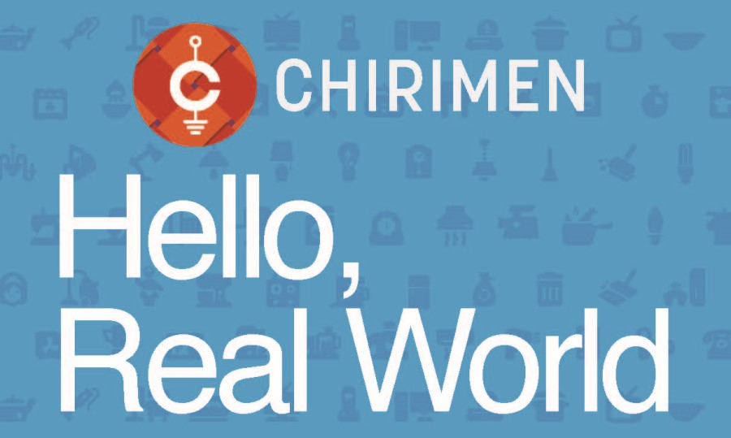

CHIRIMEN チュートリアル概要

CHIRIMEN Raspberry Pi Zero 版を用いたIoT実習資料です。
開発環境に Raspberry Pi Zero W を使い、開発言語に JavaScript を用いて、様々なセンサーやアクチュエーターを動かし、IoTプロトタイピングを可能にします。
概要では CHIRIMEN / RaspberryPi / JavaScript について解説します。
既に CHIRIMEN を体験している（使い慣れている）方に向けた情報リンク集も掲載します。